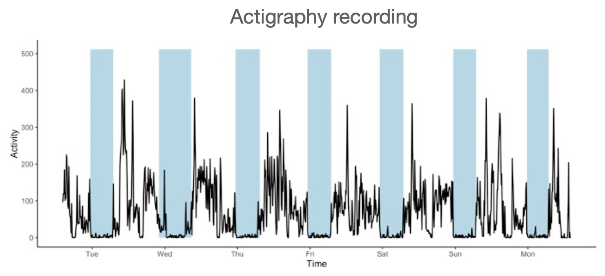
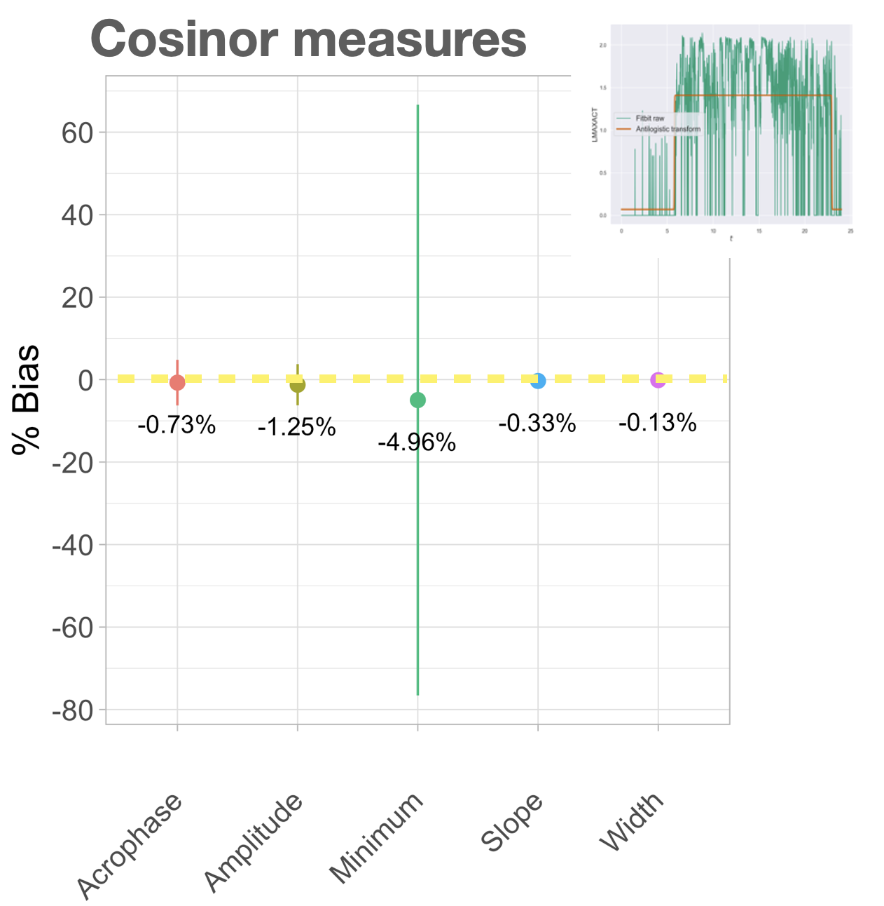
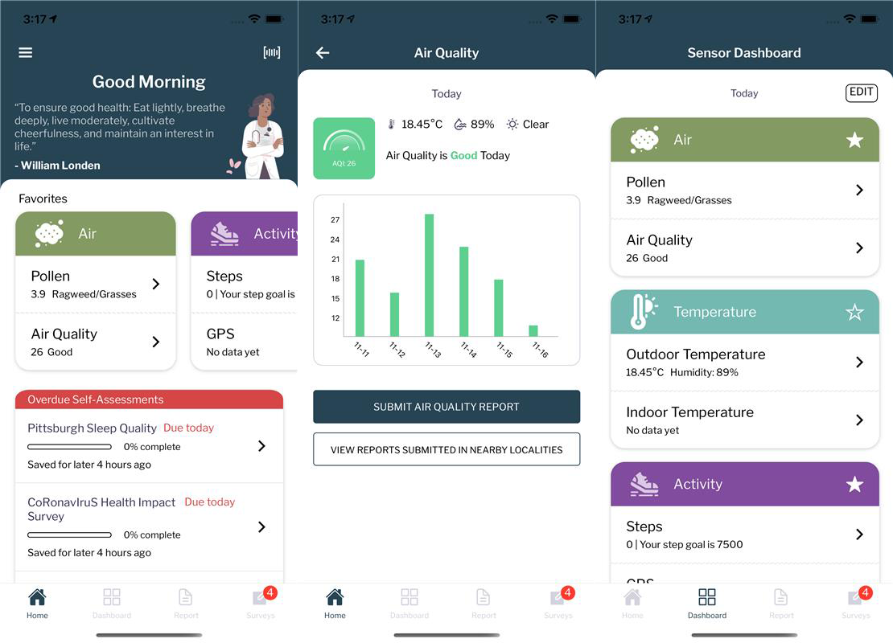

Project Details
Date:
2022
Company:
UT Austin
Methods:
Activity Tracking, Sleep Diary, Cosinor Modelling, Statistical Analysis
Description:
This research examined the instrumental validity of Fitbits for capturing human sleep and activity rhythms in order to promote well-being and trust in a self-service mobile app for community members participating in UT research. While commercial wearable activity bands are increasingly boasting sleep assessment capabilities, studies comparing these bands to previously validated devices are sparse. In one of three of my dissertation studies, I analyzed sleep and 24-hr activity rhythm measures obtained from Fitbit and Actiwatch 2.0 activity bands simultaneously worn by young and older adults. I examined the inter-device agreement for each of the selected measures to understand how well Fitbits capture these properties relative to the laboratory-grade device.
Outcome:
Relative to the Actiwatch, which for purposes of this study were considered “ground truth”, we found that Fitbits provided biased and inconsistent nightly estimates for total sleep time and time in bed but showed strong agreement for capturing the majority of global rest- activity measures, including rhythm amplitude, acrophase, and relative amplitude. These results suggest that Fitbits show strong instrumental validity for capturing 24-hr activity patterns, which opens up new opportunities for active monitoring of age-related 24-hr activity changes and scalable 24-hr activity rhythm research. These new insights helped drive the decision to include Fitbit activity data acquisition in the launch of a major 5-year cohort study under the direction of the Whole Communities Whole Health. Participants will be able to see their activity data (which showed high instrumental validity, as opposed to the sleep data) and how that relates to other environmental variables through the app.
This research is now published in Smart Health, 29 (2023).
 Fitbits Perform Well in Capturing Circadian Rhythms but Not Sleep Time /
Fitbits Perform Well in Capturing Circadian Rhythms but Not Sleep Time /

Sample actigraphy recording from a 10-d period. Recordings were obtained from two devices simultaneously worn by participants on opposing wrists, then processed and analyzed for agreement.
 Bland Altman analysis was used to assess inter-device agreement on sleep and rest-activity rhythm measures.
Bland Altman analysis was used to assess inter-device agreement on sleep and rest-activity rhythm measures.

Relative to the Actiwatch, Fitbits captured rest-activity rhythm measures fairly accurately with the exception of the rest-activity rhythm minimum.

This work informed the use of Fitbits in a later cohort study which used an app to convey real-time insights to community research participants.